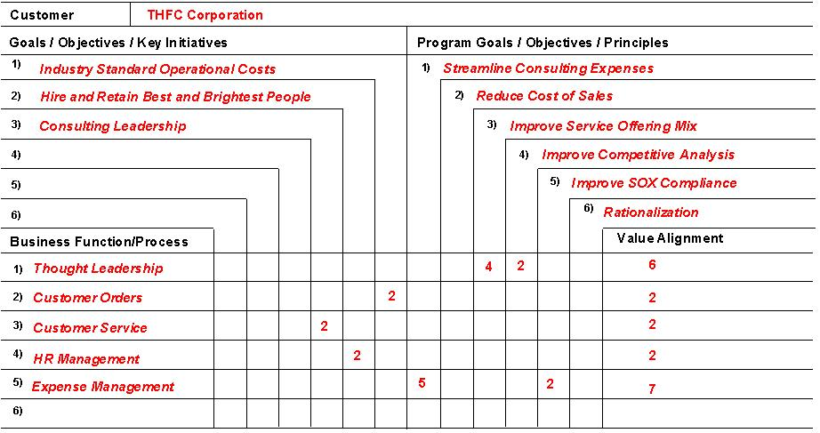

OUM |
Technique Overview |
||
Method Navigation |
Current Page Navigation |
||
|
|
||||||||
The purpose of this technique is to Identify Functional Projects and determine what projects will get the most out of an SOA approach.
One of the most significant benefits of the Functional Project Identification process is that it allows all stakeholders involved to express their knowledge and to reach a common understanding of how the pieces of the enterprise communicate with one another and with outside entities.
There are two approaches an organization may choose. The Strategic approach, is perhaps the most intensive, but is most likely to result in the best choice of projects. The Tactical approach is less intensive, but can provide reasonable accuracy with respect to project selection.
Note: This technique makes heavy references to the Functional or Process Modeling technique and assumes you have read and understood it.
List of Functional Projects - The Functional Project Identification Technique is used to help identify projects that will benefit most from a SOA Approach.
No. |
Step | Component | Component Description |
|---|---|---|---|
1 |
Choose the approach. | ||
|
If you chose the strategic approach, do the following steps. |
|||
2 |
Define Business Processes and Activities for Enterprise. | ||
3 |
Select Project and Scope based on Motivation and Reuse. | ||
|
If you chose the tactical approach, do the following steps. |
|||
2 |
Select Candidate Projects. | ||
3 |
Define Activities, Tasks and Steps for the selected projects. | ||
| 4 | Select Project and Scope based on Motivation and Reuse. | ||
This technique can be used when there is difficulty in choosing the approach. Choosing the approach, simply involves determining whether the enterprise is going to do any additional planning with respect to using functional modeling to assist with project identification. This can be beneficial, since the SOA approach involves some investment in making shared services. This investment can be mitigated by understanding what projects will get the most out of an SOA approach and help justify the expenditure.
A strategic approach is the most lengthy, but will lead to the most accurate choice in projects and priorities.
The tactical approach is less accurate but better than nothing at all. The pragmatic approach, assumes SOA to be the accepted IT strategy, and relies strictly on business priority to choose projects, rather than attempting to optimize the capabilities of the IT strategy (basically it will take longer to realize benefits of the SOA, but the priorities of the business will be met in the expected order).
1. Define business processes and activities for enterprise.
In this case, all core business processes are identified for the enterprise and expanded in the Enterprise Functional or Process Model.
All high-level activities for all core business processes are also documented into the functional model. This typically involves simply listing the activities involved in the process and detailing the flow between.2. Select project and scope based on motivation and reuse.
See the section, Evaluate Motivation Alignment, below for details for this step.
In the case of SOA this approach allows to identify maximum reuse around identified functional areas. Business processes, or portions of business processes can be scoped into projects, ordered and executed to maximize the impact of the SOA approach.
1. Select candidate projects.
This is the first step of the tactical approach. Here, a set of target projects are selected, where functional modeling will be. The project set should be based on the enterprises current priorities and overall ‘gut’ feel for overlapping functions.
2. Define activities, tasks and steps for the selected projects.
For the projects selected, Functional Modeling is performed specifically for the projects scope, not the entire enterprise, down to task level. If time permits, detailing down to step level is desirable.
3. Select project and scope based on motivation and reuse.
See “Evaluate Motivation Alignment” section below for details for this step.
In the case of SOA, the scope and order for project execution can be maximized based on reuse potential expected from understanding the functional overlap across the projects. Certain projects may be de-prioritized based on the activity and the lack of immediate SOA benefit.
An enterprise may wish to address many aspects of its business together, but identifying which business processes or functions to address while at the same time supporting the goals and objectives of the enterprise is very important. There are many sophisticated methods for identifying which processes to focus on, such as utilizing business value based approaches.
We recommend employing facilitated workshops to execute a functional model decomposition approach to populate a Business Process or Function value alignment tool within a workshop environment to assist with identifying the suitable business processes or functions on which to focus on:
.

Customer (Enterprise Name): Depending on the scope of the effort this could be the company name, department name, etc.
Goal/Objectives/Key Initiatives: The enterprises’ goals and objectives. These should be gathered from the enterprise’s motivational model.
Program Strategy Goals/Objectives/Principles: The goals, objectives and principles specific to the program, sponsor or initiative within which you are working.
Business Process / Functions: List of candidate business processes or functions that closely address enterprise goals, objectives, issues and SOA Goals.
Rating: Rate each process against the business objectives and program goals by assigning a value from 1 (process has little impact on business objective) to 5 (process has a very high impact on business objective)
Value Alignment: Calculate the rating totals for each business process. Two or three of the processes will stand out as having the greatest impact on the business.
The following templates and tools are available to assist with this technique:
Template File Name |
Comments |
|---|---|
| MS POWERPOINT |
This technique is recommended for use in the following OUM tasks:
| Task | Usage |
|---|---|
| Use this technique to assist in the identification of projects. | |
| Use this technique to assist in prioritization. | |
| Use this technique to assist in prioritization. |
This section is not yet available.

Copyright © 2006, 2016, Oracle and/or its affiliates. All rights reserved.